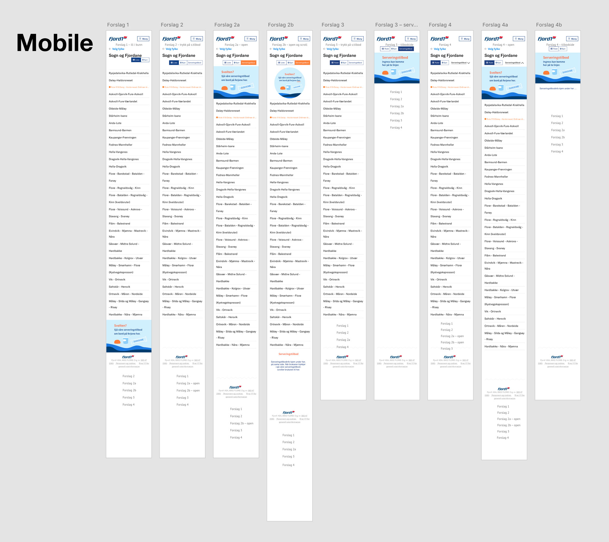

Prototyping — skap flere ideer tidlig i prosessen
En prototype er en enkel, rask og billig metode for å prøve ut ideer og funksjoner. Den kan gi inspirasjon til forbedringer og gjør det enklere å kommunisere ideer for alle involverte. Både grove skisser på papir og mer raffinerte digitale prototyper kan brukertestes, noe som kan gi konkrete svar tidlig i prosessen. Resultatet er et kvalitetsikret sluttprodukt og en mer kostnadseffektiv utvikling. Endringer koster mer å implementere hvis de blir oppdaget senere i prosessen.
En prototype kan svare på:
– Løser den brukeroppgavene på en enkel måte?
– Er funksjonene nyttig for brukerne?
– Fungerer designet med forskjellig innhold?
– Fungerer designet i ulike kontekster?
Noen bedrifter trenger hjelp til enkeltutfordringer, mens andre trenger hjelp til å integrere en større plan over tid. Det viktigste er å ha en kontinuerlig plan for forbedring og fornyelse. Med dette fokuset vil din bedrift øke brukervennligheten og på samme tid gi mulighet til å integrere forretningsideer på en god måte. Og ikke minst — i neste omgang tiltrekke brukere/kunder.
SpitsMedia har prototypet for Fjord1. Oppdraget gikk ut på å generere ideer til små funksjonelle moduler og å fremheve forretningsmessige detaljer til Fjord1 sine nettsider. Resultatet ble presentert i en digital prototype.

SpitsMedia kan hjelpe din bedrift med å få mer ut av designprosessene og sette innovasjonsarbeidet i system.
Ta kontakt!